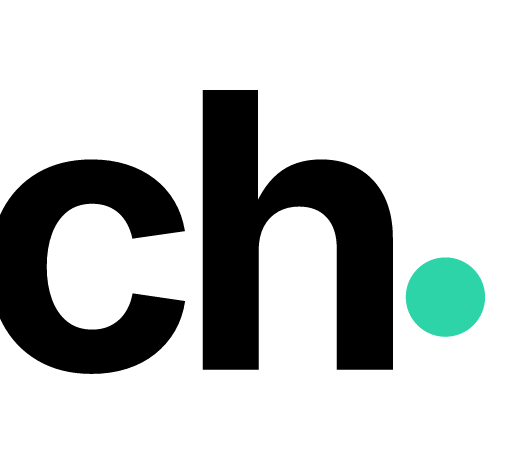
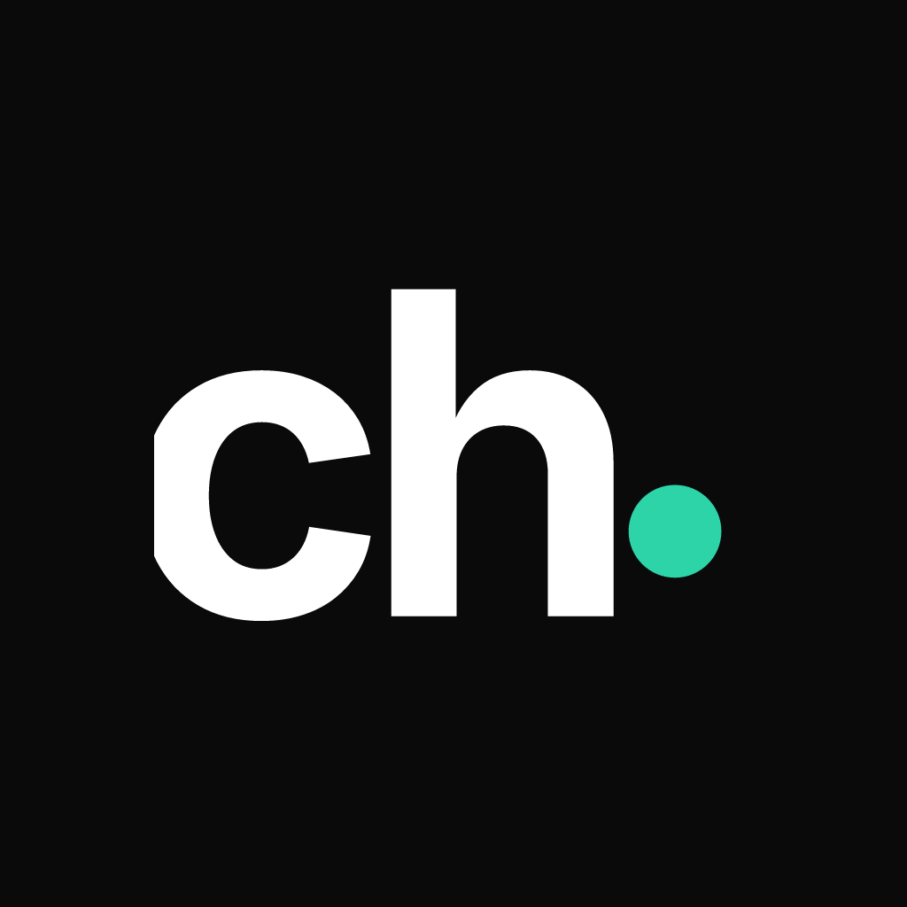
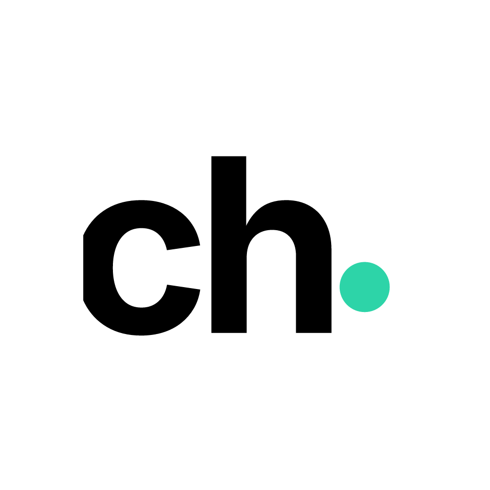
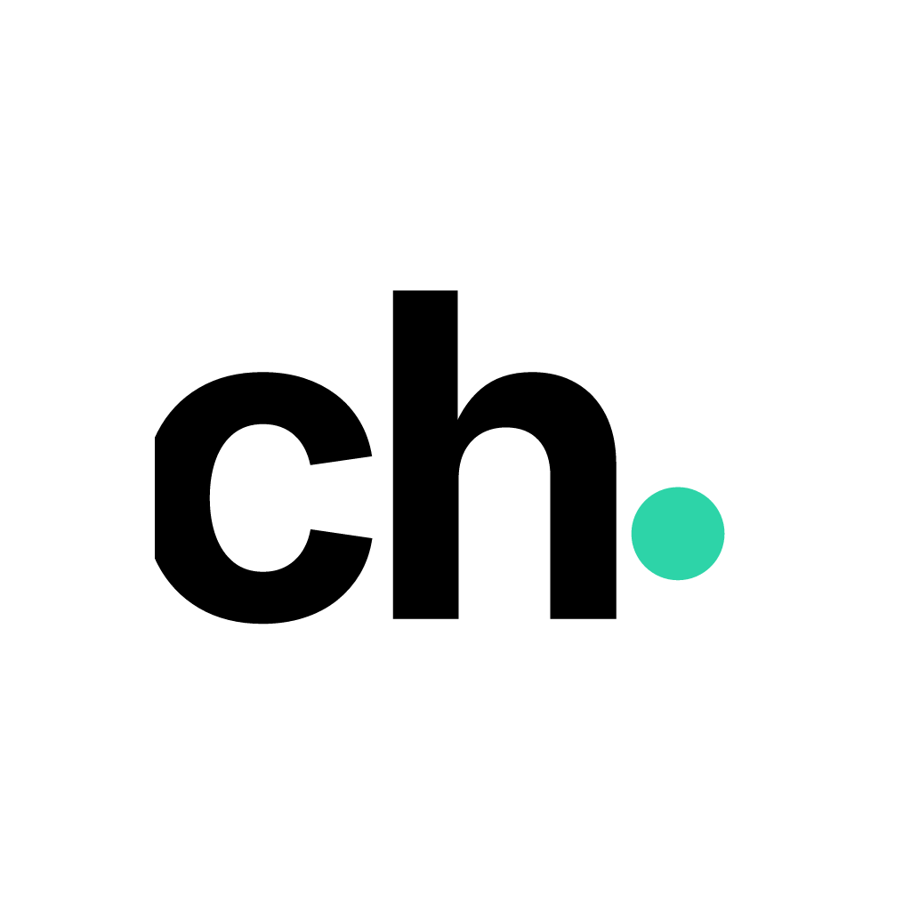

chris hornak
Wordmark, mark, avatars, and social banners for chrishornak.com. Generated from the live brand assets — the teal dot is the signature (the "i" in chris, the point after "ch"). Marketing strategist: get found, stay found, convert.
Dark background uses off-white ink; light background uses near-black. The teal dot never changes. Files: wordmark/wordmark-{dark,light}.svg + PNG @400 / 800 / 1600 px.

Files: mark/mark-{dark,light}.svg + PNG @128 / 256 / 512 / 1024 px.




Square masters — platforms crop to a circle. Suggested: dark for the primary profile presence. Files: avatar/avatar-{dark,light,transparent-onlight,transparent-ondark}-1024.png.
LinkedIn 1128×191 · X 1500×500 · Facebook 820×312. Dark editorial — "Get found. Stay found. Convert." + the approach checklist; directs to "Visit chrishornak.com". LinkedIn uses its own layout for legibility.
#0a0a0a#f0f0f0#2dd4a8Dark-first. Teal is the signal accent — the dot, links, key emphasis. Never pure black (#000), never a teal background (the dot would disappear).
The wordmark is custom lettering — always use the provided vector, don't retype it in a system font. On-site typography: Sora (headings) + Inter (body).